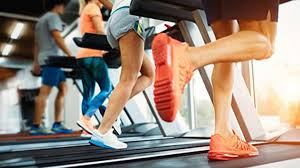
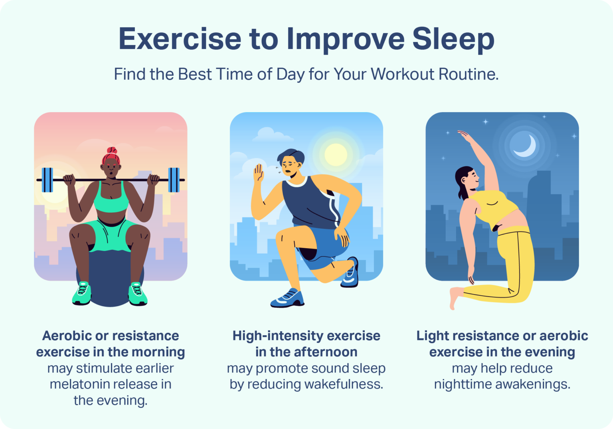
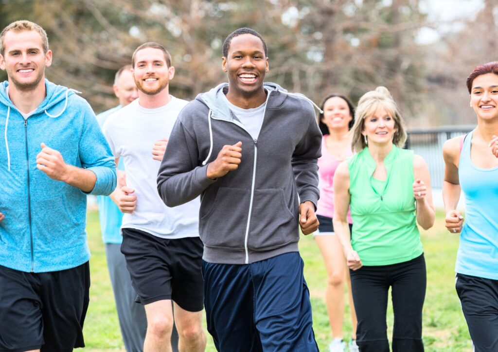

Health benefits of exercise
Exercise:7 benefits of regular physical activity
You know exercise is good for you, but do you know how good? From
boosting your mood to improving your sex life, find out how exercise
can improve your life.
1. Exercise controls weight
Exercise can help prevent excess weight gain or help you keep off
lost weight. When you take part in physical activity, you burn
calories. The more intense the activity, the more calories you burn.

Regular trips to the gym are great, but don't worry if you can't
find a large chunk of time to exercise every day. Any amount of
activity is better than none. To gain the benefits of exercise, just
get more active throughout your day. For example, take the stairs
instead of the elevator or rev up your household chores. Consistency
is key.
2. Exercise combats health conditions and diseases
Worried about heart disease? Hoping to prevent high blood pressure?
No matter what your current weight is, being active boosts
high-density lipoprotein (HDL) cholesterol, the "good" cholesterol,
and it decreases unhealthy triglycerides. This one-two punch keeps
your blood flowing smoothly, which lowers your risk of heart and
blood vessel, called cardiovascular, diseases.
Regular exercise helps prevent or manage many health problems and
concerns, including:
- Stroke.
- Metabolic syndrome.
- High blood pressure.
- Type 2 diabetes.
- Depression.
- Anxiety.
- Many types of cancer.
- Arthritis.
- Falls.
3. Exercise improves mood
.jpg)
Need an emotional lift? Or need to lower stress after a stressful
day? A gym session or brisk walk can help. Physical activity
stimulates many brain chemicals that may leave you feeling happier,
more relaxed and less anxious. You also may feel better about your
appearance and yourself when you exercise regularly, which can boost
your confidence and improve your self-esteem.
4. Exercise boosts energy
Winded by grocery shopping or household chores? Regular physical
activity can improve your muscle strength and boost your endurance.
Exercise sends oxygen and nutrients to your tissues and helps your
cardiovascular system work more efficiently. And when your heart and
lung health improve, you have more energy to tackle daily chores.
5. Exercise promotes better sleep

Struggling to snooze? Regular physical activity can help you fall
asleep faster, get better sleep and deepen your sleep. Just don't
exercise too close to bedtime, or you may be too energized to go to
sleep.
6. Exercise puts the spark back into your sex life
Do you feel too tired or too out of shape to enjoy physical
intimacy? Regular physical activity can improve energy levels and
give you more confidence about your physical appearance, which may
boost your sex life. But there's even more to it than that. Regular
physical activity may enhance arousal for women. And men who
exercise regularly are less likely to have problems with erectile
dysfunction than are men who don't exercise.
7. Exercise can be fun — and social!
Exercise and physical activity can be fun. They give you a chance to
unwind, enjoy the outdoors or simply do activities that make you
happy. Physical activity also can help you connect with family or
friends in a fun social setting. So take a dance class, hit the
hiking trails or join a soccer team. Find a physical activity you
enjoy, and just do it. Bored? Try something new, or do something
with friends or family.

Scoring of individual physical fitness tests and muscle fitness index
|
Fitness categories |
|
Poor 0 point |
Satisfy 1 point |
Good 2 points |
Excellent 3 points |
| Muscle fitness test |
|
|
|
|
| a. Standing long jump (m) |
2.00 |
2.10 |
2.20 |
> 2.40 |
| b. Sit-ups (number) |
32 |
32 |
40 |
48 |
| c. Back-ups (number) |
40 |
40 |
50 |
60 |
| d. Push-ups (number) |
22 |
22 |
30 |
38 |
| e. Pull-ups (number) |
6 |
6 |
10 |
14 |
| MFI - index (a-e) (points) |
0-4 |
5-8 |
9-12 |
13-15 |
| 12 min running test (m) |
2200 |
2200 |
2600 |
3000 |
Sport Psychology
.jpg)
Sport psychology is a proficiency that uses psychological knowledge
and skills to address optimal performance and well-being of athletes,
developmental and social aspects of sports participation, and systemic
issues associated with sports settings and organizations.
APA recognizes sport psychology as a proficiency acquired after a
doctoral degree in one of the primary areas of psychology and
licensure as a psychologist. This proficiency does not include those
who have earned a doctoral degree in sport psychology but are not
licensed psychologists.
Specialized Knowledge
This proficiency helps protect the public by ensuring that those who
seek services receive them from qualified individuals. The
proficiency provides a recognized set of standards to guide
appropriate training of psychologists who wish to practice sport
psychology. Specialized knowledge includes:
-
Theory and research in social, historical, cultural and
developmental foundations of sport psychology.
-
Issues and techniques of sport specific psychological assessment
and mental skills training for performance enhancement and
participation satisfaction.
- Clinical and counseling issues with athletes.
- Organizational and systemic aspects of sport consulting.
-
Developmental and social issues related to sport participation.
Skills and Procedures UtilizedSkills
.jpg)
Many strategies and procedures are used to address problems faced by
athletes and other sports participants. Some of the principal areas
include:
-
Cognitive and behavioral skills training for performance
enhancement. Goal setting; imagery and performance planning; concentration and
attention control strategies; development of self-confidence,
self-esteem and competence in sports; cognitive-behavioral
self-regulation techniques; emotion management, sportsmanship and
leadership skills.
-
Counseling and clinical interventions. Athletic
motivation; eating disorders and weight management; substance
abuse; grief, depression, loss and suicide; over-training and
burnout; sexual identity issues; aggression and violence; athletic
injury and rehabilitation; career transitions and identity crises.
-
Consultation and training. Team building; sports
organization consultation; systems interventions with parents and
families involved in youth sports participation; education of
coaches regarding motivation, interpersonal and leadership skills
and talent development; education of coaches and administrators
regarding early identification and prevention of psychological
difficulties.